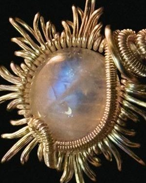
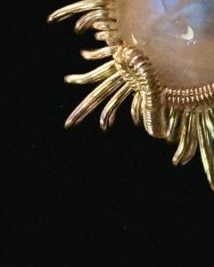
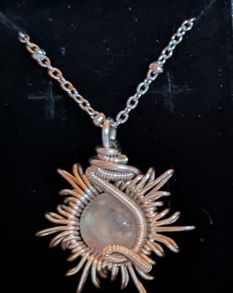
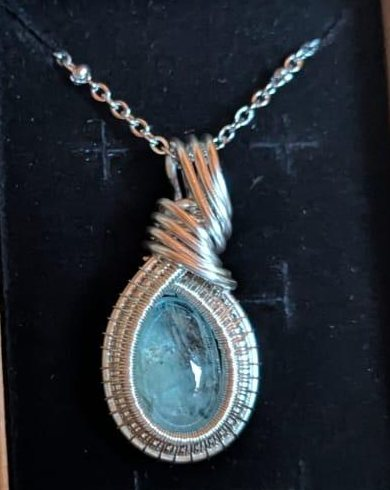
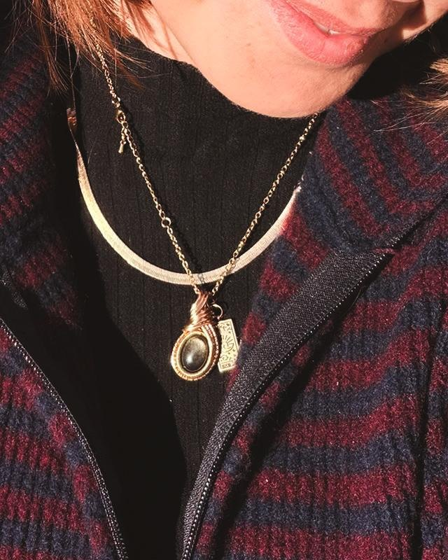

Porto
La culla della Luna nasce con l’idea di essere rifugio per anime inquiete. Posto nel quale concedersi di essere fragili. Porto e mare aperto. Culla che protegge, permettendo al nostro sguardo di volare sempre più in alto.
Alessia Iraci
Alessia è nata a Messina nel 1989. Dopo un percorso di studi umanistici si avvicina alla fotografia, poi si reinventa e prende una strada nuova: fili di rame placcati in oro e argento, pietre colorate e intrecci, alla ricerca di una propria forma.
La Luna non è soltanto un riferimento estetico. È una presenza che invita a guardarsi dentro, ad accettare anche le parti meno luminose di sé, e a riconoscere che proprio nelle fragilità può nascondersi una possibilità di crescita.
Da vicino


Scorri →
Pezzi unici




Alla luce del giorno
Filo dorato e pietra scura, da portare addosso ogni giorno.
Un tempo lento
- Iaccostare materiali e colori
- IIlavorare
- IIIcorreggere
- IVintrecciare
Un tempo lento, che appartiene a chi ha deciso di restituire valore agli oggetti attraverso l’artigianalità.
Trova la tua pietra.
Ogni gioiello nasce una volta sola. Scrivi ad Alessia per le creazioni disponibili e per sapere dove trovarla al prossimo mercatino.
Instagram →